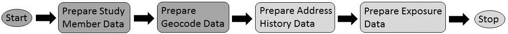

Data loading part 2: Prepare the geocode data
by Kevin Garwood
| Overview | Previous | Next |

Purpose
This table contains geographical covariate identifiers and a data quality indicator for each geocoded residential address. The covariate identifiers will be codes that identify administrative areas that contain the residential address. For example, 22 Pine Street will be within a super output area, which will be within an output area, which will be within a district, which could be within a region. These codes provide 'hooks' in the data for epidemiologists, so they can link exposure locations to area-based information such as socio-economic status, smoking habits and educational level.
The table also contains a simple flag has_valid_geocode, which may hide
various data quality indicators that are specific to a cohort, or to software they
use to match residential address histories to geographical map coordinates.
Location of Original Data File
You will need to create a file that has this nameoriginal_geocode_data.csvwhich must be located in:
early_life/input_dataor
later_life/input_data
Example Original Data File
See here.Suggested Approach
The typical steps used to produceoriginal_geocode_data are shown in the
diagram and described in the following steps. We would recommend that you create
the table using a succession of temporary tables rather than changing a single table.
This is because you will need to re-use field values you make in this process to
create the other original data tables
The geocode field is used to link original_geocode_data,
original_address_history_data and original_exposure_data tables
together. The map coordinates that are generated through the geocoding activity will be
needed to produce exposure values for each geocode.
Step 1: Gather all cohort residential addresses
We assume that you will have or will be able to produce an administrative data table that contains a chronology of residential addresses for each study member. Create unique identifiers for each address record. The identifiers will be used to| person_id | time_stamp | addr_line1 | addr_line2 | city | post_code | phone |
|---|---|---|---|---|---|---|
| 12344 | 04-05-1995 | 22 Pine St | Garwoodville | N2 7HK | 065 175 83945 | |
| 12344 | 22-08-1996 | Flat 2 | 32 Walnut Drive | Fecht Bay | N03 5XY | 065 175 83945 |
| 12344 | 04-05-1995 | 22 PINE STREET | GARWOODVILLE | N2 | 065 301 90937 | |
| 55556 | 06-06-1995 | Flat 5 | 32 Walnut Dr. | Fecht Bay | N03 5XY | 065 301 90937 |
| 55556 | 06-06-1995 | 335 Hoover Pt. | St. Gulliver's Way | P3 4WJ | 065 301 90937 | |
| 58803 | 05-06-1995 | 16 quire-Ave. | Hansell-upon-Gretal | U8 3WR | 065 767 56532 | |
| 58803 | 10-10-1997 | Main St. | Pearsontown | X21 2HT | 065 767 56532 |
First, we try to isolate just the postal address data. In the example table, we would ignore phone number because ALGAE does not need it. For the purpose of geocoding, we need neither person_id nor time_stamp fields. However, we will want to preserve the link between geocodes and address periods.
Our geocoding scheme must accommodate cases where the same geocode is used by multiple people at different times, and when the same location may be represented in several slightly different addresses. In order to minimise the amount of extraneous information used for geocoding, we can add an identifier field for each address period.
| person_id | time_stamp | location_id |
|---|---|---|
| 12344 | 04-05-1995 | 1 |
| 12344 | 22-08-1996 | 2 |
| 12344 | 04-05-1995 | 3 |
| 55556 | 06-06-1995 | 4 |
| 55556 | 06-06-1995 | 5 |
| 58803 | 05-06-1995 | 6 |
| 58803 | 10-10-1997 | 7 |
| location_id | addr_line1 | addr_line2 | city | post_code |
|---|---|---|---|---|
| 1 | 22 Pine St | Garwoodville | N2 7HK | |
| 2 | Flat 2 | 32 Walnut Drive | Fecht Bay | N03 5XY |
| 3 | 22 PINE STREET | GARWOODVILLE | N2 | |
| 4 | Flat 5 | 32 Walnut Dr. | Fecht Bay | N03 5XY |
| 5 | 335 Hoover Pt. | St. Gulliver's Way | P3 4WJ | |
| 6 | 16 quire-Ave. | Hansell-upon-Gretal | U8 3WR | |
| 7 | Main St. | Pearsontown | X21 2HT |
location_id, which allows us
to link geocodes we produce back to the address periods.
Step 2: Express Addresses in a Canonical Format
In this step, we standardise the format of residential addresses by combining all address fields into a single field value. We also standardise how we represent punctuation marks and common phrases such as avenue, street, place, point, road etc.| location_id | canonical_address |
|---|---|
| 1 | 22 PINE ST, GARWOODVILLE, N2 7HK |
| 2 | FLAT 2, 32 WALNUT DR, FECHT BAY, N03 5XY |
| 3 | 22 PINE ST, GARWOODVILLE, N2 |
| 4 | FLAT 5, 32 WALNUT DR, FECHT BAY, N03 5XY |
| 5 | 335 HOOVER PT, ST GULLIVERS WAY, P3 4WJ |
| 6 | 16 QUIRE-AVE., HANSELLUPONGRETAL, U8 3WR |
| 7 | MAIN ST, PEARSONTOWN, X21 2HT |
Step 3: Use geocoding software to produce map coordinates
In this step, you will create thegeocode and version
fields that are expected by the original_geocode_data table.
We expect that projects will use software to help automatically match
residential addresses with map coordinates. Because the behaviour of geocoding
applications can vary, we strongly recommend that you populate the
required version field with the name and version of your
software.
The software will generate x and y coordinates for each address. For the purposes of these examples, we will assume that you will generate geocode values by concatenating map coordinates together. However, some cohorts may be concerned about including sensitive location data in this field (See General Advice).
The software will likely produce data fields that indicate the quality of a match or reasons why the software had trouble processing it. Initially, you may want to preserve these fields in order to help trouble shoot cases where the software fails to produce a match.
| location_id | canonical_address | x | y | geocode | version | match | match_cause |
|---|---|---|---|---|---|---|---|
| 1 | 22 PINE ST, GARWOODVILLE, N2 7HK | 37.422036 | 122.084124 | 37.422036-122.084124 | geoMapperv1.2 | 100% | |
| 2 | FLAT 2, 32 WALNUT DR, FECHT BAY, N03 5XY | 37.424130 | 122.081221 | 37.424130-122.081221 | geoMapperv1.2 | 100% | |
| 3 | 22 PINE ST, GARWOODVILLE, N2 | 37.422036 | 122.084124 | 37.422036-122.084124 | geoMapperv1.2 | 80% | Incomplete post code |
| 4 | FLAT 5, 32 WALNUT DR, FECHT BAY, N03 5XY | 37.424130 | 122.081221 | 37.424130-122.081221 | geoMapperv1.2 | 100% | |
| 5 | 335 HOOVER PT, ST GULLIVERS WAY, P3 4WJ | 37.424132 | 122.081333 | 37.424132-122.081333 | geoMapperv1.2 | 100% | |
| 6 | 16 QUIRE-AVE., HANSELLUPONGRETAL, U8 3WR | geoMapperv1.2 | 0% | Unknown street | |||
| 7 | MAIN ST, PEARSONTOWN, X21 2HT | 37.424133 | 122.081440 | 37.424133-122.081440 | geoMapperv1.2 | 30% | Missing street number |
Step 4: Allow for manual geocoding efforts
Undoubtedly the geocoding software will fail to match some geocodes (see General Advice section). We expect that you will do geocoding as an iterative activity that may involve manually matching canonical addresses with map coordinates. It may also involve editing canonical addresses and running the geocoding software again. Yourversion
field should include enough information to describe which method and iteration was
used to geocode failed matches.
ALGAE expects that a comments field will be present in the
original_geocode_data table. Although you can leave this field blank,
you may want to include other useful information in it. For example, you could record
how you manually fixed a canonical address that resulted in a failed match. You may
also want to preserve diagnostic information about a geocode that was generated by
the geocoding software you used. How you populate this field will depend on what you
think is important to record or what information about locations you're comfortable to
retain in the final version of the table.
| location_id | canonical_address | x | y | geocode | version | comments | match | match_cause |
|---|---|---|---|---|---|---|---|---|
| 1 | 22 PINE ST, GARWOODVILLE, N2 7HK | 37.422036 | 122.084124 | 37.422036-122.084124 | geoMapperv1.2 | 100% | ||
| 2 | FLAT 2, 32 WALNUT DR, FECHT BAY, N03 5XY | 37.424130 | 122.081221 | 37.424130-122.081221 | geoMapperv1.2 | 100% | ||
| 3 | 22 PINE ST, GARWOODVILLE, N2 | 37.422036 | 122.084124 | 37.422036-122.084124 | geoMapperv1.2 | 80% | Incomplete post code | |
| 4 | FLAT 5, 32 WALNUT DR, FECHT BAY, N03 5XY | 37.424130 | 122.081221 | 37.424130-122.081221 | geoMapperv1.2 | 100% | ||
| 5 | 335 HOOVER PT, ST GULLIVERS WAY, P3 4WJ | 37.424132 | 122.081333 | 37.424132-122.081333 | geoMapperv1.2 | 100% | ||
| 6 | 16 CHOIR AVE, HANSELLUPONGRETAL, U8 3WR | 37.424132 | 122.081310 | 37.424132-122.081310 | klg_28122015 | removed hyphen | 100% | Unknown street |
| 7 | MAIN ST, PEARSONTOWN, X21 2HT | 37.424133 | 122.081440 | 37.424133-122.081440 | geoMapperv1.2 | 30% | Missing street number |
version and comments fields can contain
information about how matches were fixed so they could yield map coordinates.
Step 5: Decide how to derive values for has_valid_geocode field
In this step you will derive the has_valid_geocode field that must appear
in the original_geocode_data table. You may have to decide how a collection
of data quality fields generated by the geocoding software would map to a "Yes/No" result.
For example, in the example data set, you may decide that if an address was manually geocoded or if the quality of an automated match is above 50%, then the result is "Y". Otherwise the value would be "N".
| location_id | canonical_address | x | y | geocode | version | comments | has_valid_geocode |
|---|---|---|---|---|---|---|---|
| 1 | 22 PINE ST, GARWOODVILLE, N2 7HK | 37.422036 | 122.084124 | 37.422036-122.084124 | geoMapperv1.2 | Y | |
| 2 | FLAT 2, 32 WALNUT DR, FECHT BAY, N03 5XY | 37.424130 | 122.081221 | 37.424130-122.081221 | geoMapperv1.2 | Y | |
| 3 | 22 PINE ST, GARWOODVILLE, N2 | 37.422036 | 122.084124 | 37.422036-122.084124 | geoMapperv1.2 | Y | |
| 4 | FLAT 5, 32 WALNUT DR, FECHT BAY, N03 5XY | 37.424130 | 122.081221 | 37.424130-122.081221 | geoMapperv1.2 | Y | |
| 5 | 335 HOOVER PT, ST GULLIVERS WAY, P3 4WJ | 37.424132 | 122.081333 | 37.424132-122.081333 | geoMapperv1.2 | Y | |
| 6 | 16 CHOIR AVE, HANSELLUPONGRETAL, U8 3WR | 37.424132 | 122.081310 | 37.424132-122.081310 | klg_28122015 | removed hyphen | Y |
| 7 | MAIN ST, PEARSONTOWN, X21 2HT | 37.424133 | 122.081440 | 37.424133-122.081440 | geoMapperv1.2 | N |
has_valid_geocode.
Step 6: Add geographical covariate data fields
You will need a means of using map coordinates to identify administrative areas that contain each geocoded address. The default version of ALGAE usesed91, oa2001, and coa2011 to represent
administrative areas. If you want to use different kinds of administrative fields,
please see the section Change covariates.
Step 7: Link geocodes back to address period data
In order to ensure that the geocode values in theoriginal_geocode_data
correspond with geocode values in the original_address_history_data, you
need to link the geocodes we have created between the two tables. In the example,
you would use location_id as a linking field.
| person_id | time_stamp | geocode |
|---|---|---|
| 12344 | 04-05-1995 | 37.422036-122.084124 |
| 12344 | 22-08-1996 | 37.424130-122.081221 |
| 12344 | 04-05-1995 | 37.422036-122.084124 |
| 55556 | 06-06-1995 | 37.424130-122.081221 |
| 55556 | 06-06-1995 | 37.424132-122.081333 |
| 58803 | 05-06-1995 | 37.424132-122.081310 |
| 58803 | 10-10-1997 | 37.424133-122.081440 |
location_id field is used to ensure that
the geocodes used in both original_geocode_data and
original_address_history_data can be linked.
Step 8: Eliminate extraneous fields
| geocode | version | comments | ed91 | oa2001 | coa2011 | has_valid_geocode |
|---|---|---|---|---|---|---|
| 37.422036-122.084124 | geoMapperv1.2 | ED91-1 | OA2001-1 | COA2011-1 | Y | |
| 37.424130-122.081221 | geoMapperv1.2 | ED91-1 | OA2001-2 | COA2011-2 | Y | |
| 37.422036-122.084124 | geoMapperv1.2 | ED91-1 | OA2001-1 | COA2011-1 | Y | |
| 37.424130-122.081221 | geoMapperv1.2 | ED91-1 | OA2001-2 | COA2011-2 | Y | |
| 37.424132-122.081333 | geoMapperv1.2 | ED91-2 | OA2001-3 | COA2011-3 | Y | |
| 37.424132-122.081310 | klg_28122015 | removed hyphen | ED91-2 | OA2001-4 | COA2011-4 | Y |
| 37.424133-122.081440 | geoMapperv1.2 | ED91-2 | OA2001-5 | COA2011-5 | N |
original_geocode_data. The
final table will contain only the fields which are necessary and sufficient for ALGAE
to produce results.
Some projects may want to retain location information in the geocodes, whereas others may want to anonymise them to help minimise risks of identifying study members in data sets that may be maintained off-site from the cohort's facilities. Although anonymising geocodes can help minimise identifiability, it can also remove information that can be used to determine
General Advice
Decide whether you want to anonymise geocodes
Although ALGAE uses geocode values to link the input tables together, it does not include geocodes in any of the result tables it produces. The only location data that are included in results are the covariate identifiers that describe administrative areas that contain each geocode. However, we assume that an administrative area will be large enough to minimise the likelihood of identifying a specific residential address used by a given study member.Depending on how cohort facilities and off-site research partners divide the work of producing the original data tables, the project members may want the geocode values to be anonymised to minimise the identifiability of location data. Should you decide to anonymise geocode data, take special care to ensure that geocode values in corresponding tables are also anonymised in the same way.
Expect to do geocoding in multiple passes
The residential addresses that you use will likely have been manually entered into some administrative software system. It is likely that geocoding software will fail to match some of them with map coordinates. If such an address is used by study members for a significant part of their exposure periods, then a failed match will mean they may be excluded from calculations that produce exposure results.
In order to ensure that the most study members have exposure results, you may spend a lot
of effort doing geocoding. Typically your work will either mean you correct addresses
and re-run the software or that you interpret incorrect addresses and use your judgement
to match them with appropriate map coordinates. We suggest you assume you will need to
finish geocoding in multiple passes, and that in each pass you will make use of the
version and comments fields to record how coordinates were
derived.
Understand why geocoding may fail for some addressses
There are many reasons why an address may result in an invalid geocode. Some of these include:
typographical errors. If residential addresses are typed manually, they may contain mistakes that result in a non-existent address.
incomplete addresses. If an address is missing a street number, the software may either fail to provide a match, or provide a guess that is of such poor quality that it is not appropriate to use in a given study.
deprecated addresses. Over time, some street names may change and post codes may be retired, or reflect a change in the scope of area they cover. If the software is unable to recognise outdated addresses, it may fail to produce a match.
new addresses. The software may be referencing an outdated collection of addresses that may not include addresses from newly built residential areas.
incomplete address database. The geocoding software may be using a database that simply doesn't contain all the addresses it should have.
parsing errors. The software may interpret characters which it uses as delimiters. For example, the presence of a comma may cause the software to break an address into an incorrect number of address components. As another example, it may interpret the forward slash in 'c/o' as a signal to perform some kind of pre-processing.
abbreviations. An address may be correctly specified but contain abbreviations that are not understood by the software. For example, if the software is designed to suit US addresses, it may understand "ct." means court but may not understand the Canadian version which uses "crt".
centroid errors. The software, in its attempts to find the centre for a postal code area, may provide coordinates that would not make sense on a map. For example, the software could determine that the centre of a postal code area that covers a cove may actually be on water. Other calculations could place the centre of a post code in at the top of a mountain or in the middle of an industrial area that has no residents.
There are certain classes of errors that neither automated nor manual geocoding approaches would likely identify. For example, an address may contain a topographical error that still results in a valid geocode. Suppose that an address is written as 22 Pine Street when it should be 222 Pine Street, and the street is long enough to accommodate both addresses.
Table Properties
You need to produce a CSV file calledoriginal_geocode_data. It must
have the following fields:
| Field | Description | Required | Properties | Examples |
|---|---|---|---|---|
| geocode | Represents the location of a residential address. For ALGAE, the geocode is treated as just an identifier and the protocol attaches no meaning to the code. | Yes | Any text |
37.422036-122.084124
x4353bi838 (anonymised) |
| version |
Describes some aspect of an attempt to geocode the residential address histories.
Version may refer to the name and version of a software application that was used
to associate residential addresses with map coordinates.
It may also describe the institution that did the work, a specific technique for mapping addresses to coordinates, or whether the geocoding was done manually or through software. The field is intended to help scientists decide whether geocodes produced in a certain way should be filtered or not. |
No | Any text |
my_geocoding_program-v1.1
Imperial_Manual_pass4 your_cohort-02122015 |
| comments | Any other information that exposure scientists want to provide about a geocode | No | Any text | |
| ed91 | UK district, based on the 1991 census. This is an administrative area that scientists can use to link a geographic location to covariates that describe properties of the area that could account for associations between pollutants and health outcomes. | No | Any text, but for future data linking activities you will want to ensure codes follow their appropriate naming conventions | |
| oa2001 | UK output area, based on the 1991 census. An output area is the lowest geographical level at which census estimates are provided. It is used in the same way as ED91. | No | Any text, but for future data linking activities you will want to ensure codes follow their appropriate naming conventions | |
| coa2011 | UK census output area, based on the 2011 census. An output area is the lowest geographical level at which census estimates are provided. It is used in the same way as ED91. | No | Any text, but for future data linking activities you will want to ensure codes follow their appropriate naming conventions | |
| has_valid_geocode |
Indicates whether a geocode should be considered valid or not. This flag would
typically be derived from various data quality flags that a geocoding application
would generate. An application may either completely fail to generate a map location
or the value it does produce is a vague guess based on partial addresses.
ALGAE doesn't care why a geocode is or is not valid, but it uses the flag to help determine whether it can generate exposure values for a study member. |
Yes |
One of the following ways to represent no or yes:
N n no NO FALSE false No |
Yes |